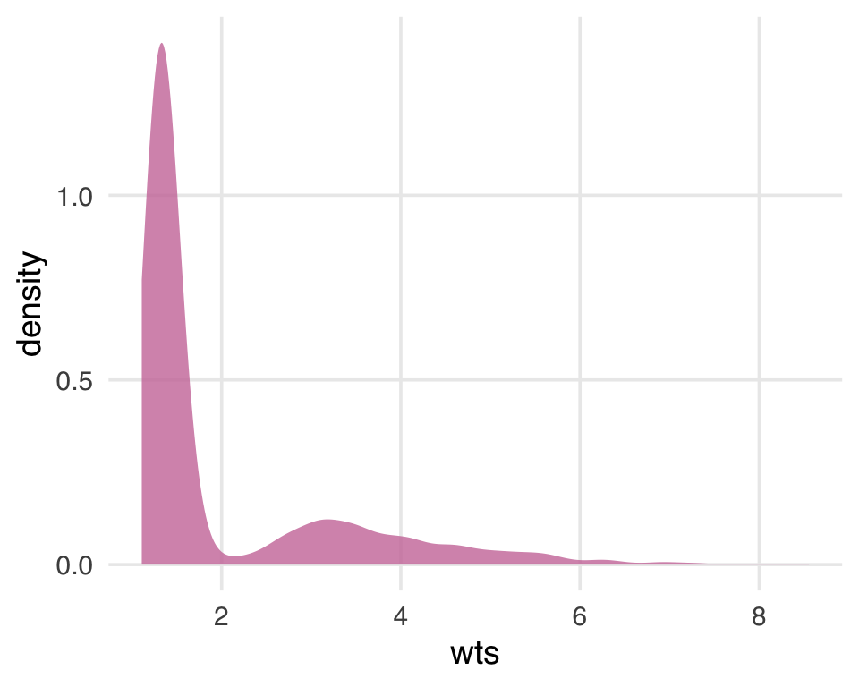
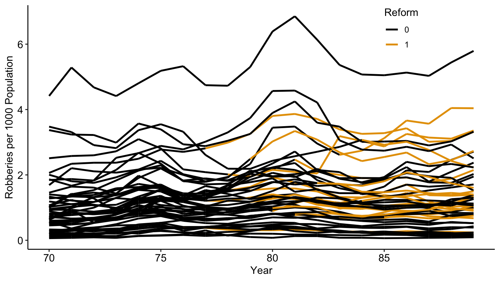

Last week we introduced DAGs as a method to represent our causal assumptions and infer how we might estimate the causal effects of interest.
We worked through a method to estimate causal effects using IPW.
This week
We will look at other methods used to estimate causal effects, along with methods used for special situations.
Packages
Causal Effect Estimation
Inverse Probability Weighting
Last week we used IPW to create a pseudopopulation where, for every confounder level, the numbers of treated and untreated were balanced.
IPW requires us to build a model to predict the treatment, depending on the confounders (assuming we have data for all the confounders).
Inverse Probability Weighting
Repeating our prior process, first we calculate the ipw weights and estimate the ate using the weights.
ATE estimate by IPW
dat_ <- causalworkshop::net_data |> dplyr::mutate(net =as.numeric(net))propensity_model <-glm( net ~ income + health + temperature , data = dat_, family =binomial())net_data_wts <- propensity_model |> broom::augment(newdata = dat_, type.predict ="response") |># .fitted is the value predicted by the model# for a given observation dplyr::mutate(wts = propensity::wt_ate(.fitted, .exposure = net))# alternatively:# dplyr::mutate(# ipw = dplyr::case_when(net == 1 ~ 1/.fitted, TRUE ~ 1/(1-.fitted))# , wts_alt = (net / .fitted) + ((1 - net) / (1 - .fitted) )# )net_data_wts |>lm(malaria_risk ~ net, data = _, weights = wts) |> broom::tidy(conf.int =TRUE)
# A tibble: 2 × 7
term estimate std.error statistic p.value conf.low
<chr> <dbl> <dbl> <dbl> <dbl> <dbl>
1 (Inte… 42.7 0.442 96.7 0 41.9
2 net -12.5 0.624 -20.1 5.50e-81 -13.8
# ℹ 1 more variable: conf.high <dbl>
Inverse Probability Weighting
Using propensity::wt_ate calculates unstabilized weights by default. In the last lecture we looked at the distribution of weights and decided they were stable enough, because none of the weights were too big or too small.

Figure 1: A density plot of the average treatment effect (ATE) weights. The plot is skewed, with higher values towards 8. This may indicate a problem with the model, but the weights aren’t so extreme to destabilize the variance of the estimate.
Let’s explore the question of IPW stabilization a bit more.
Inverse Probability Weighting
Stabilized weights
The IP weights (given covariate set \(L\)) are \(W^A=1/\mathbb{E}[D|L]\). Because the denominator can be very close to \(0\) or \(1\) the estimates using these weights can be unstable.
Stabilized weights are often used to address this, e.g. the function propensity::wt_ate with stabilize = TRUE multiplies the weights by the mean of the treatment so in this case \(SW^A=\mathbb{E}[D]/\mathbb{E}[D|L]\).
Inverse Probability Weighting
V-Stabilized weights
Baseline covariates (\(V\subset L\)) are also used to stabilize IP weights: \(SW^A(V)=\mathbb{E}[D|V]/\mathbb{E}[D|L]\).
Note the the variables \(V\) need to be included in the numerator and the denominator (as part of \(L\))
V-stabilization results in IP weights that are more stabilized than the ones without V.
Inverse Probability Weighting
We know that IPW weighting should create a pseudo-population that make the covariates more balanced by treatment. In the last lecture we checked this using histograms. Here we check this via the statistics of the data:
Next we use bootstrapping to generate proper confidence intervals for the effect, first by creating a function to generate (unstabilized) ipw effect estimates for each bootstrap split:
Code
fit_ipw <-function(split, ...) {# get bootstrapped data sample with `rsample::analysis()`if("rsplit"%in%class(split)){ .df <- rsample::analysis(split) }elseif("data.frame"%in%class(split)){ .df <- split }# fit propensity score model propensity_model <-glm( net ~ income + health + temperature,data = .df,family =binomial() )# calculate inverse probability weights .df <- propensity_model |> broom::augment(type.predict ="response", data = .df) |> dplyr::mutate(wts = propensity::wt_ate(.fitted, net))# fit correctly bootstrapped ipw modellm(malaria_risk ~ net, data = .df, weights = wts) |> broom::tidy()}
Inverse Probability Weighting
Next we use our function to bootstrap proper confidence intervals:
Code
# create bootstrap samplesbootstrapped_net_data <- rsample::bootstraps( dat_,times =1000,# required to calculate CIs laterapparent =TRUE)# create ipw and fit each bootstrap sampleresults <- bootstrapped_net_data |> dplyr::mutate(ipw_fits = purrr::map(splits, fit_ipw))
Regression Adjustment
IPW estimates rely on a model to predict the treatment using covariate/confounder values. We know that we can also predict the effect of treatment by building a model to predict the outcome using a regression model, regressing the effect on the treatment and covariate/confounder values.
Code
outcome_model <-glm( malaria_risk ~ net + income + health + temperature + insecticide_resistance +I(health^2) +I(temperature^2) +I(income^2),data = dat_)outcome_model |> broom::tidy(conf.int =TRUE)
And we can also bootstrap the regression adjustment estimates to get confidence intervals, first by creating the estimation function, then generating bootstrapped estimates, like we did with IPWs:
Code
fit_reg <-function(split, ...) {# get bootstrapped data sample with `rsample::analysis()`if("rsplit"%in%class(split)){ .df <- rsample::analysis(split) }elseif("data.frame"%in%class(split)){ .df <- split }# fit outcome modelglm(malaria_risk ~ net + income + health + temperature + insecticide_resistance +I(health^2) +I(temperature^2) +I(income^2), data = .df )|> broom::tidy()}both_results <- results |> dplyr::mutate(reg_fits = purrr::map(splits, fit_reg))
IPW vs Regression Adjustment
We can compare the results:
Code
both_results_dat <- both_results |> dplyr::mutate(reg_estimate = purrr::map_dbl( reg_fits,# pull the `estimate` for net for each fit \(.fit) .fit |> dplyr::filter(term =="net") |> dplyr::pull(estimate) ) , ipw_estimate = purrr::map_dbl( ipw_fits,# pull the `estimate` for net for each fit \(.fit) .fit |> dplyr::filter(term =="net") |> dplyr::pull(estimate) ) )
Note that each mean ate estimate is within the CIs of the other ate mean estimate.
IPW vs Regression Adjustment
There is a package (boot) that performs cross-validation and CI estimation at the same time:
Code
# bootstrap (1000 times) using the fit_reg functionboot_out_reg <- boot::boot(data = causalworkshop::net_data |> dplyr::mutate(net =as.numeric(net)) , R =1000 , sim ="ordinary" , statistic = (\(x,y){ # x is the data, y is a vector of row numbers for the bootstrap samplefit_reg(x[y,]) |> dplyr::filter(term =="net") |> dplyr::pull(estimate) }))# calculate the CIsCIs <- boot_out_reg |> boot::boot.ci(L = boot::empinf(boot_out_reg, index=1L, type="jack"))tibble::tibble(CI =c("lower", "upper"), normal = CIs$normal[-1], basic = CIs$basic[-(1:3)] , percent = CIs$percent[-(1:3)])
# A tibble: 2 × 4
CI normal basic percent
<chr> <dbl> <dbl> <dbl>
1 lower -12.9 -12.9 -12.9
2 upper -11.8 -11.8 -11.9
Doubly Robust Estimation
Don’t Put All your Eggs in One Basket
We’ve learned how to use linear regression and propensity score weighting to estimate \(E[Y|D=1] - E[Y|D=0] | X\). But which one should we use and when?
When in doubt, just use both! Doubly Robust Estimation is a way of combining propensity score and linear regression in a way you don’t have to rely on either of them.
where \(\hat{P}(x)\) is an estimation of the propensity score (using logistic regression, for example), \(\hat{\mu_1}(x)\) is an estimation of (using linear regression, for example), and is an estimation of \(E[Y|X, D=1]\). As you might have already guessed, the first part of the doubly robust estimator estimates \(E[Y^1]\) and the second part estimates \(E[Y^0]\). Let’s examine the first part, as all the intuition will also apply to the second part by analogy.
Doubly Robust Estimation
First let’s examine the code. Note we use a recipe with the regression to add the polynomial confounders for each
Code
D <-"net"Y <-"malaria_risk"X <-paste0(c('income', 'health', 'temperature'),c(rep('_poly_1',3),rep('_poly_2',3)))doubly_robust <-function(df, X, D, Y){ ps <-# propensity scoreas.formula(paste(D, " ~ ", paste(X, collapse="+"))) |> stats::glm( data = df, family =binomial() ) |> broom::augment(type.predict ="response", data = df) |> dplyr::pull(.fitted) lin_frml <-formula(paste(Y, " ~ ", paste(X, collapse="+"))) idx <- df[,D] %>% dplyr::pull(1) ==0 mu0 <-# mean response D == 0lm(lin_frml, data = df[idx,]) %>% broom::augment(type.predict ="response", newdata = df[,X]) |> dplyr::pull(.fitted) idx <- df[,D] %>% dplyr::pull(1) ==1 mu1 <-# mean response D == 1lm(lin_frml, data = df[idx,]) |> broom::augment(type.predict ="response", newdata = df[,X]) |> dplyr::pull(.fitted)# convert treatment factor to integer | recast as vectors d <- df[,D] %>% dplyr::pull(1) |>as.character() |>as.numeric() y <- df[,Y] %>% dplyr::pull(1)mean( d*(y - mu1)/ps + mu1 ) -mean(( 1-d)*(y - mu0)/(1-ps) + mu0 )}doubly_robust_rec <- causalworkshop::net_data |> dplyr::mutate(net =as.numeric(net)) |> recipes::recipe(malaria_risk ~ net + income + health + temperature) |> recipes::step_poly(income, health, temperature) |> recipes::prep() doubly_robust_dat <- doubly_robust_rec |> recipes::bake(new_data=NULL)doubly_robust_dat |>doubly_robust(X, D, Y)
[1] -12.9
Doubly Robust Estimation
Once again, we can use bootstrap to construct confidence intervals.
The doubly robust estimator is called doubly robust because it only requires one of the models, \(\hat{P}(x)\) or \(\hat{\mu}(x)\), to be correctly specified. To see this, take the first part that estimates \(E[Y^1]\) and take a good look at it.
Assume that \(\hat{\mu_1}(x)\) is correct. If the propensity score model is wrong, we wouldn’t need to worry. Because if \(\hat{\mu_1}(x)\) is correct, then \(E[D_i(Y_i - \hat{\mu_1}(X_i))]=0\). That is because the multiplication by \(T_i\) selects only the treated and the residual of \(\hat{\mu_1}\) on the treated have, by definition, mean zero. This causes the whole thing to reduce to \(\hat{\mu_1}(X_i)\), which is correctly estimated \(E[Y^1]\) by assumption. So, you see, that by being correct, \(\hat{\mu_1}(X_i)\) wipes out the relevance of the propensity score model. We can apply the same reasoning to understand the estimator of \(E[Y^0]\).
Doubly Robust Estimation
Replace the propensity score by a random uniform variable that goes from 0.1 to 0.9 (we don’t want very small weights to blow up the propensity score variance). Since this is random, there is no way it is a good propensity score model, but the doubly robust estimator still manages to produce an estimation that is very close to when the propensity score was estimated with logistic regression.
As we can see, messing up the propensity score yields slightly different ATEs, but not by much. This covers the case that the propensity model is wrong but the outcome model is correct. What about the other situation? Let’s again take a good look at the first part of the estimator, but let’s rearrange some terms
Now, assume that the propensity score \(\hat{P}(X_i)\) is correctly specified. In this case, \(E[D_i - \hat{P}(X_i)]=0\), which wipes out the part dependent on \(\hat{\mu_1}(X_i)\). This makes the doubly robust estimator reduce to the propensity score weighting estimator \(\frac{D_iY_i}{\hat{P}(X_i)}\), which is correct by assumption. So, even if the \(\hat{\mu_1}(X_i)\) is wrong, the estimator will still be correct, provided that the propensity score is correctly specified.
Once more, messing up the conditional mean model alone yields only slightly different ATE. The magic of doubly robust estimation happens because in causal inference, there are two ways to remove bias from our causal estimates: you either model the treatment mechanism or the outcome mechanism. If either of these models are correct, you are good to go.
One caveat is that, in practice, it’s very hard to model precisely either of those. More often, what ends up happening is that neither the propensity score nor the outcome model are 100% correct. They are both wrong, but in different ways. When this happens, it is not exactly settled [1][2][3] if it’s better to use a single model or doubly robust estimation. I still like using them because at least it gives me two possibilities of being correct.
Finite Sample Bias
We know that not accounting for confounders can bias our causal estimates, but it turns out that even after accounting for all confounders, we may still get a biased estimate in finite samples. Many of the properties we tout in statistics rely on large samples—how “large” is defined can be opaque. Let’s look at a quick simulation. Here, we have an exposure/treatment, \(X\), an outcome, \(Y\), and one confounder, \(Z\). We will simulate \(Y\), which is only dependent on \(Z\) (so the true treatment effect is 0), and \(X\), which also depends on \(Z\).
\[
\begin{align*}
X &\sim \mathscr{N}(0,1)\\
X & = \mathrm{ifelse}(0.5+Z>0,1,0)\\
Y & = Z + \mathscr{N}(0,1)
\end{align*}
\]
Finite Sample Bias
Code
set.seed(928)n <-100finite_sample <- tibble::tibble(# z is normally distributed with a mean: 0 and sd: 1z =rnorm(n),# x is defined from a probit selection model with normally distributed errorsx = dplyr::case_when(0.5+ z +rnorm(n) >0~1,TRUE~0 ),# y is continuous, dependent only on z with normally distrbuted errorsy = z +rnorm(n))
Finite Sample Bias
If we fit a propensity score model using the one confounder \(Z\) and calculate the weighted estimator, we should get an unbiased result (which in this case would be \(0\)).
# A tibble: 1 × 1
effect
<dbl>
1 0.197
Finite Sample Bias
Our effect of is pretty far from 0, although it’s hard to know if this is really bias, or something we are just seeing by chance in this particular simulated sample. To explore the potential for finite sample bias, we can rerun this simulation many times at different sample sizes:
Finite Sample Bias
Ploting the results:

Finite sample bias present with ATE weights created using correctly specified propensity score model, varying the sample size from n = 50 to n = 10,000
Finite Sample Bias
This is an example of finite sample bias. Notice here, even when the sample size is quite large (5,000) we still see some bias away from the “true” effect of 0. It isn’t until a sample size larger than 10,000 that we see this bias disappear.
Estimands that utilize weights that are unbounded (i.e. that theoretically can be infinitely large) are more likely to suffer from finite sample bias. The likelihood of falling into finite sample bias depends on:
the estimand you have chosen (i.e. are the weights bounded?)
the distribution of the covariates in the exposed and unexposed groups (i.e. is there good overlap? Potential positivity violations, when there is poor overlap, are the regions where weights can become too large)
the sample size.
Matching
Regression does an amazing job at controlling for additional variables when we do a test vs control comparison. If we have independence, \((Y^0, Y^1)\perp D | X\), then regression can identify the ATE by controlling for X.
To get some intuition about controlling for X, let’s remember the case when all variables X are dummy variables.
If that is the case, regression partitions the data into the dummy cells and computes the mean difference between test and control. Effectively we are calculating doing \(E[Y|D=1] - E[Y|D=0] | X=x]\), where \(x\) is a dummy cell (all dummies set to 1, for example).
Regression then combines the estimate in each of the cells to produce a final ATE. The way it does this is by applying weights to the cell proportional to the variance of the treatment on that group.
Matching
To give an example, suppose we try to estimate the effect of a drug and I have 6 men and 4 women. The response variable is days hospitalised and I hope my drug can lower that. On men, the true causal effect is -3, so the drug lowers the stay period by 3 days. On women, it is -2.
To make matters more interesting, men are much more affected by this illness and stay longer at the hospital. They also get much more of the drug. Only 1 out of the 6 men does not get the drug. On the other hand, women are more resistant to this illness, so they stay less at the hospital. 50% of the women get the drug.
sex
drug
days
M
1
5
M
1
5
M
1
5
M
1
5
M
1
5
M
0
8
W
1
2
W
0
4
W
1
2
W
0
4
Matching
Note that simple comparison of treatment and control yields a negatively biased effect, that is, the drug seems less effective than it truly is. This is expected, since we’ve omitted the sex confounder. In this case, the estimated ATE is smaller than the true one because men get more of the drug and are more affected by the illness.
drug
mean_effect
ATE
0
5.333
NA
1
4.143
-1.19
Matching
Since the true effect for men is -3 and the true effect for women is -2, the ATE should be
\[
ATE=\dfrac{(-3*6) + (-2*4)}{10}=-2.6
\]
This estimate is done by
partitioning the data into confounder cells, in this case, men and women,
estimating the effect on each cell and
combining the estimate with a weighted average, where the weight is the sample size of the cell or covariate group.
Matching
If we had exactly the same number of men and women in the data, the ATE estimate would be right in the middle of the ATE of the 2 groups, -2.5. Since there are more men than women in our dataset, the ATE estimate is a little bit closer to the men’s ATE. This is called a non-parametric estimate, since it places no assumption on how the data was generated.
If we control for sex using regression, we will add the assumption of linearity. Regression will also partition the data into men and women and estimate the effect on both of these groups. So far, so good. However, when it comes to combining the effect on each group, it does not weigh them by the sample size.
Matching
Instead, regression uses weights that are proportional to the variance of the treatment in that group. In our case, the variance of the treatment in men is smaller than in women, since only one man is in the control group. To be exact, the variance of D for men is \(0.139=1/6*(1 - 1/6)\) and for women is \(0.25=2/4*(1 - 2/4)\). So regression will give a higher weight to women in our example and the ATE will be a bit closer to the women’s ATE of -2.
Regression summary (ATE)
days ~ drug + sex
term
estimate
std.error
statistic
p.value
(Intercept)
7.5455
0.188
40.093
0.000
drug
−2.4545
0.188
−13.042
0.000
sexW
−3.3182
0.176
−18.849
0.000
Matching
The result is more intuitive with dummy variables, but regression also keeps continuous variables constant while estimating the effect. Also with continuous variables, the ATE will point in the direction where covariates have more variance.
So we’ve seen that regression has its idiosyncrasies. It is linear, parametric, likes high variance features… This can be good or bad, depending on the context. Because of this, it’s important to be aware of other techniques we can use to control for confounders. Not only are they an extra tool in your causal tool belt, but understanding different ways to deal with confounding expands our understanding of the problem. For this reason, I present you now the Subclassification Estimator!
Matching: subclassification
In general, if there is some causal effect we want to estimate, but it is hard to do so because of confounding of some variables X, what we need to do is make the treatment vs control comparison within small groups where X is the same. If we have conditional independence \((Y^0, Y^1)\perp D | X\) , then we can write the ATE as follows.
\[
ATE = \int(E[Y|X, D=1] - E[Y|X, D=0])dP(x)
\]
Matching: subclassification
What the integral does is it goes through all the space of the distribution of features X, computes the difference in means for all those tiny spaces and combines everything into the ATE.
Another way to see this is to think about a discrete set of features. In this case, we can say that the features X takes on K different cells \(\{X_1, X_2, ..., X_k\}\) and what we are doing is computing the treatment effect in each cell and combining them into the ATE. In this discrete case, converting the integral to a sum, we can derive the subclassifications estimator
As you can see, we are computing a local ATE for each cell and combining them using a weighted average, where the weights are the sample size of the cell. In our medicine example above, this would be the first estimate, which gave us −2.6.
The subclassification estimator isn’t used much in practice, because of the curse of dimensionality.
Matching estimator
The subclassification estimator gives us a nice intuition of what a causal inference estimator should do, how it should control for confounders. This allows us to explore other kinds of estimators, such as the Matching Estimator.
Matching estimator
Since some confounder X makes it so that treated and untreated are not initially comparable, I can make them so by matching each treated unit with a similar untreated unit. It is like we’re finding an untreated twin for every treated unit. By making such comparisons, treated and untreated become again comparable.
As an example, let’s suppose we are trying to estimate the effect of a trainee program on earnings. Here is what the trainees looks like
A simple comparison in means, identifies that the trainees earn less money than those that didn’t go through the program.
trainees
mean_effect
ATE
0
20724
NA
1
16426
-4297
Matching estimator
However, if we look at the data tables, we notice that trainees are much younger than non trainees, which indicates that age is probably a confounder.
We can use matching on age to try to correct that. We will take unit 1 from the treated and pair it with unit 27, since both are 28 years old. Unit 2 we will pair it with unit 34, unit 3 with unit 37, unit 4 we will pair it with unit 35… When it comes to unit 5, we need to find someone with age 29 from the non treated, but that is unit 37, which is already paired. This is not a problem, since we can use the same unit multiple times. If more than 1 unit is a match, we can choose randomly between them.
unit_t_1
trainees_t_1
age
earnings_t_1
unit_t_0
trainees_t_0
earnings_t_0
t1_minus_t0
1
1
28
17700
27
0
8800
8900
2
1
34
10200
34
0
24200
-14000
3
1
29
14400
37
0
6200
8200
4
1
25
20800
35
0
23300
-2500
5
1
29
6100
37
0
6200
-100
Matching estimator
If we take the mean of this last column we get the ATET estimate while controlling for age. Notice how the estimate is now very positive, compared to the previous one where we used a simple difference in means.
ATE
2458
Matching estimator
This is a contrived example, just to introduce matching.
In reality, we usually have more than one feature and units don’t match perfectly. In this case, we have to define some measurement of proximity to compare how units are close to each other. One common metric for this is the euclidean norm \(||X_i - X_j||\). This difference, however, is not invariant to the scale of the features. This means that features like age, that take values on the tenths, will be much less important when computing this norm compared to features like income, which take the order of hundreds.
For this reason, before applying the norm, we need to scale the features so that they are on roughly the same scale.
Matching estimator
Having defined a distance measure, we can now define the match as the nearest neighbour to that sample we wish to match. In math terms, we can write the matching estimator the following way
Where \(Y_{jm}(i)\) is the sample from the other treatment group which is most similar to \(Y_i\). We do this \(2T_i - 1\) to match both ways: treated with controls and controls with the treatment.
Matching estimator
To test this estimator, let’s consider a medicine example. Once again, we want to find the effect of a medication on days until recovery. Unfortunately, this effect is confounded by severity, sex and age. We have reasons to believe that patients with more severe conditions have a higher chance of receiving the medicine.
sex
age
severity
medication
recovery
0
35.05
0.8877
1
31
1
41.58
0.8998
1
49
1
28.13
0.4863
0
38
1
36.38
0.3231
0
35
0
25.09
0.2090
0
15
Matching estimator
If we look at a simple difference in means, \(E[Y|D=1]-E[Y|D=0]\), we get that the treatment takes, on average, 16.9 more days to recover than the untreated. This is probably due to confounding, since we don’t expect the medicine to cause harm to the patient.
medication
mean_effect
ATE
0
21.68
NA
1
38.57
16.9
Matching estimator
To correct for this bias, we will control for X using matching. First, we need to remember to scale our features, otherwise, features like age will have higher importance than features like severity when we compute the distance between points. To do so, we can standardise the features.
sex
age
severity
medication
recovery
-0.997
0.2808
1.4598
1
31
1.003
0.8654
1.5022
1
49
1.003
-0.3387
0.0578
0
38
1.003
0.3995
-0.5126
0
35
-0.997
-0.6105
-0.9111
0
15
Matching estimator
Now, to the matching itself. Instead of coding a matching function, we will use the K nearest neighbour algorithm from caret::knnreg. This algorithm makes predictions by finding the nearest data point in an estimation or training set.
For matching, we will need 2 of those. One, mt0, will store the untreated points and will find matches in the untreated when asked to do so. The other, mt1, will store the treated point and will find matches in the treated when asked to do so. After this fitting step, we can use these KNN models to make predictions, which will be our matches.
Matching estimator
ID
sex
age
severity
medication
recovery
match
1
−0.996980
0.280787
1.459800
1
31
39
2
1.002979
0.865375
1.502164
1
49
52
3
−0.996980
1.495134
1.268540
1
38
46
4
1.002979
−0.106534
0.545911
1
34
45
5
−0.996980
0.043034
1.428732
1
30
39
Matching estimator
With the matches, we can now apply the matching estimator formula
Using this sort of matching, we can see that the effect of the medicine is not positive anymore. This means that, controlling for \(X\), the medicine reduces the recovery time by about 1 day, on average. This is already a huge improvement on top of the biased estimate that predicted a 16.9 increase in recovery time.
Matching bias
It turns out the matching estimator as we’ve designed above is biased. To see this, let’s consider the ATET estimator, instead of the ATE, just because it is simpler to write. The intuition will apply to the ATE as well.
\[
\hat{ATET} = \frac{1}{N_1}\sum (Y_i - Y_j(i))
\] where \(N_1\) is the number of treated individuals and \(Y_j(i)\) is the untreated match of treated unit i.
Matching bias
To check for bias, what we do is hope we can apply the Central Limit Theorem so that this estimate converges to a normal distribution with mean zero.
\[
\sqrt{N_1}(\hat{ATET} - ATET)
\]However, this doesn’t alway happen. If we define the mean outcome for the untreated given X, \(\mu_0(x)=E[Y|X=x, D=0]\), we will have that (btw, I’ve omitted the proof for that because it’s a little beyond the point here).
Now, \(\mu_0(X_i) - \mu_0(X_j(i))\) is not so simple to understand, so let’s look at it more carefully. \(\mu_0(X_i)\) is the outcome Y value of a treated unit \(i\) had it not been treated. So, it is the counterfactual outcome \(Y^0\) for unit \(i\). \(\mu_0(X_j(i))\) is the outcome of the untreated unit \(j\) that is the match of unit \(i\). So, it is also the \(Y^0\), but for unit \(j\) now. Only this time, it is a factual outcome, because \(j\) is in the non treated group. Now, because \(j\) and \(i\) are only similar, but not the same, this will likely not be zero. In other words, \(X_i \approx X_j\). So, \(Y^0_i \approx Y^0_j\).
Matching bias
As we increase the sample size, there will be more units to match, so the difference between unit \(i\) and its match \(j\) will also get smaller. But this difference converges to zero slowly. As a result \(E[\sqrt{N_1}(\mu_0(X_i) - \mu_0(X_j(i)))]\) may not converge to zero, because the \(\sqrt{N_1}\) grows faster than \((\mu_0(X_i) - \mu_0(X_j(i)))\) diminishes.
Matching bias
Bias arises when the matching discrepancies are huge. Fortunately, we know how to correct it. Each observation contributes \((\mu_0(X_i) - \mu_0(X_j(i)))\) to the bias so all we need to do is subtract this quantity from each matching comparison in our estimator. To do so, we can replace \(\mu_0(X_j(i))\) with some sort of estimate of this quantity \(\hat{\mu}_0(X_j(i))\), which can be obtained with models like linear regression. This updates the ATET estimator to the following equation:
\[
\hat{ATET} = \frac{1}{N_1}\sum \big((Y_i - Y_{j(i)}) - (\hat{\mu_0}(X_i) - \hat{\mu_0}(X_{j(i)}))\big)
\] where \(\hat{\mu_0}(x)\) is some estimative of \(E[Y|X, D=0]\), like a linear regression fitted only on the untreated sample.
Matching bias
ID
sex
age
severity
medication
recovery
match
bias_correct
1
−0.996980
0.280787
1.459800
1
31
39
4.404
2
1.002979
0.865375
1.502164
1
49
52
12.915
3
−0.996980
1.495134
1.268540
1
38
46
1.871
4
1.002979
−0.106534
0.545911
1
34
45
-0.497
5
−0.996980
0.043034
1.428732
1
30
39
2.610
Matching bias
Doesn’t this defeat the point of matching? If I have to run a linear regression anyway, why don’t I use only that, instead of this complicated model.
First of all, this linear regression that we are fitting doesn’t extrapolate on the treatment dimension to get the treatment effect. Instead, its purpose is just to correct bias. Linear regression here is local, in the sense that it doesn’t try to see how the treated would be if it looked like the untreated. It does none of that extrapolation. This is left to the matching part. The meat of the estimator is still the matching component. The point is that OLS is secondary to this estimator.
Matching bias
The second point is that matching is a non-parametric estimator. It doesn’t assume linearity or any kind of parametric model. As such, it is more flexible than linear regression and can work in situations where linear regression will not, namely, those where non linearity is very strong.
Matching bias
With the bias correction formula, I get the following ATE estimation.
ATE (est)
-7.363
Matching CI
Of course, we also need to place a confidence interval around this measurement.
In practice, we can simply use someone else’s code and just import a matching estimator. Here is one from the library Matching.
Treatment Effect Estimates: Matching
using R package Matching
measure
est
se
ATE
−7.708
0.962
ATC
−6.664
1.644
ATT
−9.680
0.123
Finally, we can say with confidence that our medicine does indeed lower the time someone spends at the hospital. The ATE estimate is just a little bit lower than our algorithm, due to the difference in tie breaking of matches of knn implementation and the Matching R package.
Matching bias again
We saw that matching is biased when the unit and its match are not so similar. But what causes them to be so different?
As it turns out, the answer is quite simple and intuitive. It is easy to find people that match on a few characteristics, like sex. But if we add more characteristics, like age, income, city of birth and so on, it becomes harder and harder to find matches. In more general terms, the more features we have, the higher will be the distance between units and their matches.
This is not something that hurts only the matching estimator. It ties back to the subclassification estimator we saw earlier. In that contrived medicine example where with man and woman, it was quite easy to build the subclassification estimator. That was because we only had 2 cells: man and woman. But what would happen if we had more? Let’s say we have 2 continuous features like age and income and we manage to discretise them into 5 buckets each. This will give us 25 cells, or \(5^2\). And what if we had 10 covariates with 3 buckets each? Doesn’t seem like a lot right? Well, this would give us 59049 cells, or \(3^{10}\). It’s easy to see how this can blow out of proportion pretty quickly. This is a phenomena pervasive in all data science, which is called the The Curse of Dimensionality!!!
Matching bias again
In the context of the subclassification estimator, the curse of dimensionality means that it will suffer if we have lots of features.
Lots of features imply multiple cells in X. If there are multiple cells, some of them will have very few data. Some of them might even have only treated or only control, so it won’t be possible to estimate the ATE there, which would break our estimator.
In the matching context, this means that the feature space will be very sparse and units will be very far from each other. This will increase the distance between matches and cause bias problems.
Matching bias again
As for linear regression, it actually handles this problem quite well.
What it does is project all the features X into a single one, the Y dimension. It then makes treatment and control comparison on that projection. So, in some way, linear regression performs some sort of dimensionality reduction to estimate the ATE. It’s quite elegant.